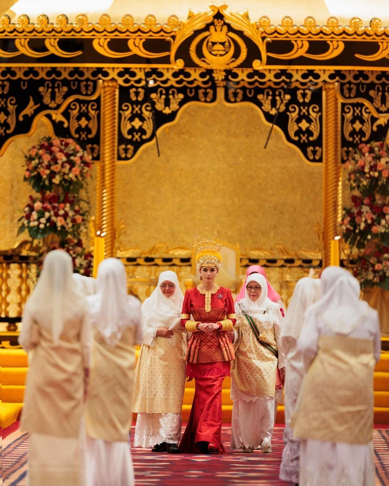

Melayu Brunei
The Melayu Brunei community plays an important role in the country's national identity and cultural heritage. its traditions are closely associated with the Malay language, customs, traditional attire and Brunei's Malay Islamic Monarchy philosophy.